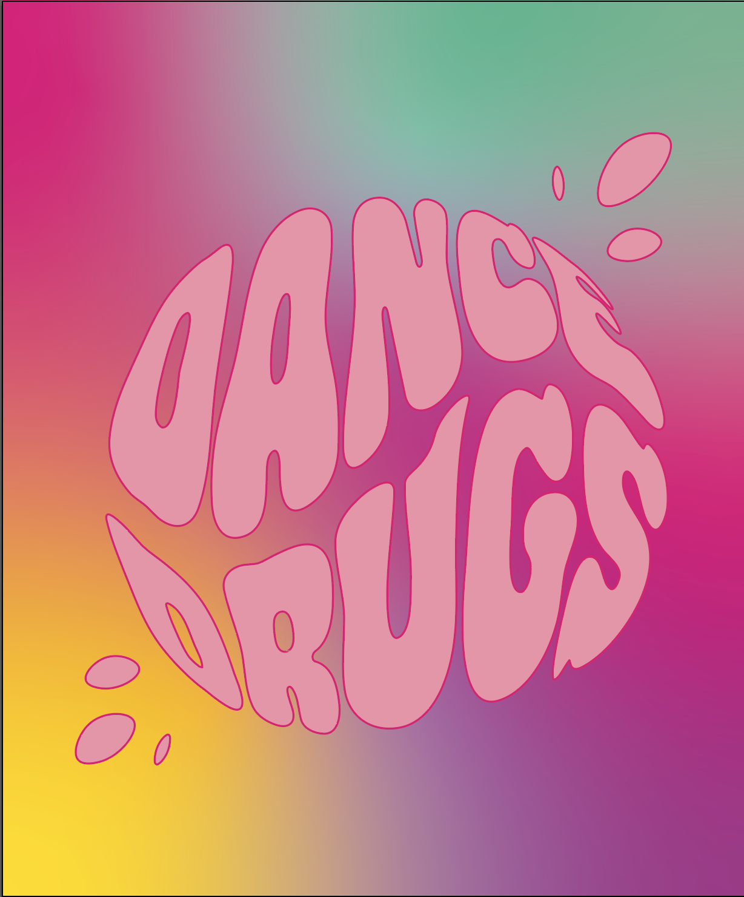

Ons doel
Welkom bij Dance Drugs, de podcast waarin we open en eerlijk praten over party drugs, zonder deze te verheerlijken of goed te praten. Of je nu vaak op festivals bent, nieuwsgierig bent naar middelen zoals XTC, MDMA, cocaïne en lachgas, of gewoon veilig wilt blijven terwijl je geniet van het nachtleven – hier krijg je de juiste info.
In Dance Drugs praten we met experts, ervaringsdeskundigen en jongeren zoals jij, zodat je bewust en verantwoordelijk keuzes kunt maken. We bespreken de effecten, de risico’s én hoe je jezelf en je vrienden veilig houdt. Geen taboes en geen oordelen, alleen de feiten die je nodig hebt om goed geïnformeerd te blijven.
Het gaat ons niet om het promoten of vergelijken van drugs, maar om jou te helpen de realiteit en impact ervan te begrijpen. Feesten is pas echt leuk als je weet hoe je veilig kunt genieten. Dus zet het volume wat harder en laat ons je meenemen in een open gesprek over party drugs en alles wat daarbij komt kijken.
